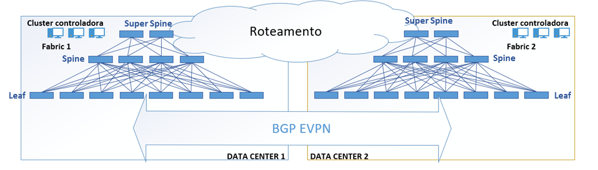
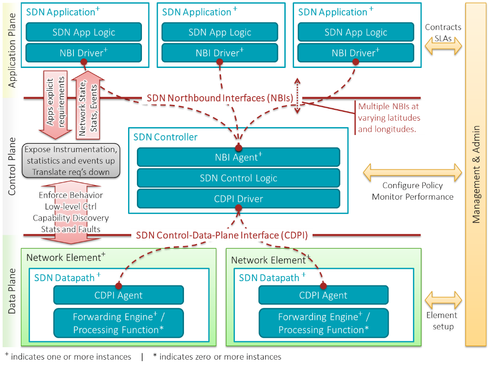
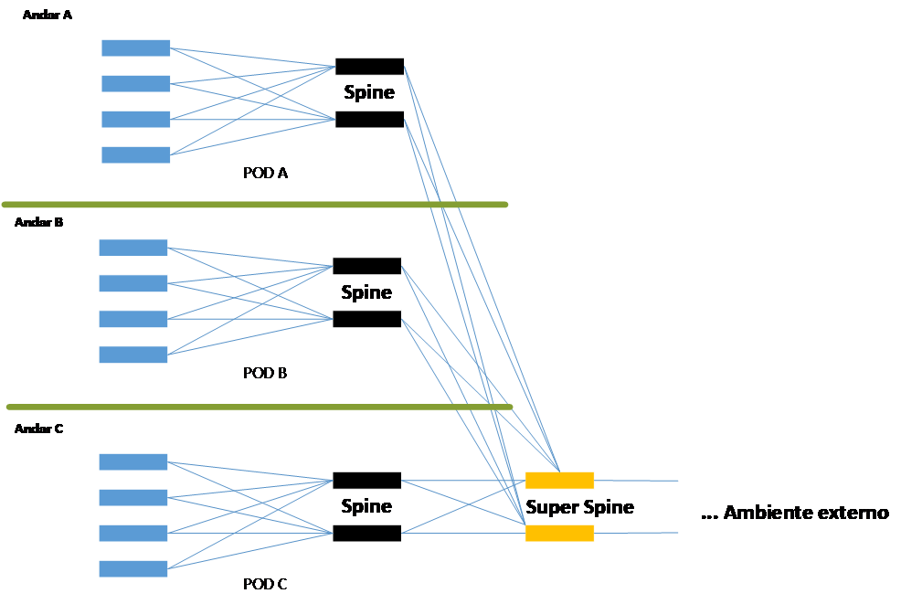
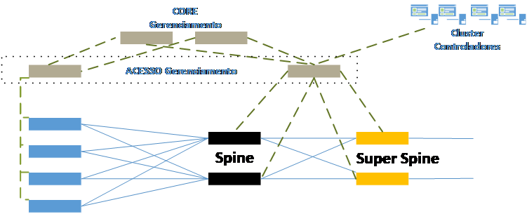

SWITCHING DATACENTER
Objetivo
Definição da Arquitetura Tecnológica da comutação de quadros (Switching) presente no Datacenter CAIXA, com a apresentação das tecnologias envolvidas, especificações preliminares da solução, Topologias e cenários de utilização.
Tecnologias
Introdução
As tecnologias envolvidas na rede dos datacenters visam efetivamente a otimização dos recursos e a performance.
Como elemento central e catalisador em muitas arquiteturas de telecomunicações, os Datacenters devem estar preparados para a execução das comunicações com a menor latência possível entre seus elementos, com o mínimo de consumo de energia e geração de calor.
Assim, nas verticais tecnológicas de infraestrutura dos Datacenters: Switching, Routing, Circuitos, Elementos de segurança (Firewall, proxies, Concentradores VPN, IDS, IPS etc), Servidores Diversos, a latência e capacidades das interconexões são essenciais para sua efetividade.
Nesse sentido, a vertical de Switching é a base de toda essa movimentação, responsável por efetivamente disponibilizar o desempenho e comunicação para todas as demais verticais.
Necessidades atuais de Comutação
Ao longo do tempo as comunicações em um Datacenter, graças às implementações de elementos virtuais diversos, criando estruturas em nuvem com movimentações de serviços e servidores entre Datacenters, seja para expansão como para contingência, os interesses de tráfego de dados, antes hierárquicos (Norte-Sul), passaram a ser laterais (Leste-Oeste).
Com isso, as estruturas formais de 3 ou mais camadas de switches como: Core, Agregação e acesso, tiveram que ser revisadas para obtenção de ganhos de performance e flexibilidade de gestão.
Quanto a performance, a estrutura clássica, hierárquica foram atualizadas pelo mercado para uma releitura da Arquitetura de rede de circuitos CLOS: comumente denominada de Spine-Leaf.
Quanto à flexibilidade de gestão, considerando toda a virtualização exigida atualmente, com utilização de contêineres, nuvens externas, serviços sob demanda e temporários, vem sendo adotada a tecnologia de SDN (Software Defined Network).
Tecnologia Spine-Leaf
A Arquitetura baseada em rede CLOS tem sua origem na Telefonia e carrega o nome de quem a padronizou, Charles Clos.
Baseia-se no princípio de ligações de todos com todos, sem contenção (non-blocking), de forma que, para acessar um elemento em qualquer parte do Datacenter, seria utilizado no máximo 1 hop.
O mercado adotou o termo de Spine-Leaf, conforme topologia a seguir:

O Spine é o concentrador dos leaves, e neste último, os servidores físicos.
O Super Spine é o elemento de comunicação com outros Datacenters, usando protocolos de roteamento de camada 3 (BGP, MP-BGP) para este fim.
- Este também é o responsável por realizar os encapsulamentos dos protocolos de camada 2 em camada 3, permitindo a extensão segura de redes comutadas entre os datacenters.
Todos os leaves estão distantes somente um hop de qualquer leaf do mesmo datacenter, o que, com a utilização de conexões físicas em fibra ótica, reduziu ainda mais a latência nas comunicações leste-oeste.
Importante também estabelecimento de alguns conceitos importantes nesta arquitetura:
-
Switching Fabric ou Fabric: Conceito que retrata o conjunto físico de funcionamento dos equipamentos de switching em uma rede. No caso do datacenter, representa o conjunto de switches e suas regras e configurações que fazem toda a comutação acontecer dentro do ambiente e fora dele, geridos de maneira unificada.
- O conceito pode ser expandido para os dois datacenters da CAIXA, de forma que podemos admitir que o Fabric da CAIXA contempla os dois Datacenters (CTC e DTC).
-
PoD (Point of Delivery): Trata-se do conjunto mínimo de equipamentos interligados, compondo um conjunto de spine e leaves (físicos) que poderiam ser habilitados ou separados no Datacenter para um serviço específico ou gestão mais atomizada. Conceito oriundo do mundo de 3 camadas.
- Em algumas configurações de Datacenters, onde coexistem diversas gerações e equipamentos, os PoD podem ser criados por versões, sendo um para cada geração.
- Os PoDs são subconjuntos do Fabric, qualificados em um tipo de entrega, localização física ou à geração dos equipamentos presentes. Por exemplo, uma vertical de serviços em um Datacenter poderia ser um PoD.
Sob o ponto de vista de performance, esta configuração atendeu perfeitamente a necessidade de baixa latência exigida para os Datacenters, mas exigiu maiores investimentos em interfaces e conexões físicas em fibra-ótica.
No entanto, com a redução dos preços dos equipamentos e do cabeamento, este incremento não foi tão percebido quanto o aumento de performance.
Tecnologia SDN (Software Defined Network)
As novas gerações de equipamentos presentes nos Datacenter foram desenvolvidos dentro dos conceitos de SDN (Software Defined Network)
Surgida nos meios acadêmicos em 2004, com o nome de Openflow, sua primeira implementação ocorreu em timidamente em 2012 (Avaya).
Esta tecnologia parte do pressuposto da separação da rede em dois planos, o plano de controle (Administração e políticas) do de Dados (encaminhamentos e formação de quadros e pacotes). O plano de Controle contempla toda a inteligência administrativa e de politicas da estrutura SDN. Este plano é responsável pelo estabelecimento, automatizado ou não de todas as regras e configurações que deverão ser obedecidas pelo plano de dados. O plano de dados é a comutação física propriamente dita, composto pelos equipamentos (hardware e software) interligado por cabos e fibras óticas.
- O plano de Controle, a princípio, pode gerir o plano de dados, independente dos equipamentos ou hardwares existentes, podendo atuar, teoricamente com parques compostos por equipamentos de diversos fabricantes.
- O plano de dados, segue rigorosamente o determinado pelo plano de controle, consultando-o em situações não predefinidas acerca dos encaminhamentos, ou conforme a estratégia definida para os encaminhamentos.
Como benefícios, essa tecnologia trouxe a capacidade de gerenciamento efetivamente centralizado, possibilitando maior controle e gestão de ambientes com muitos equipamentos;
Distribuição de políticas em todo o parque sem a necessidade de configurações individuais;
Facilidade de programação e integrações, considerando que são aplicações que estão gerindo o Datacenter e não mais equipamentos específicos;
Capacidade de automações constantes, análise de informações de segurança e troubleshooting facilitadas pelas informações centralizadas, possibilitando a utilização de motores de análises de dados e Inteligência Artificial.
Escalabilidade por não necessitar necessariamente crescer o plano de controle com a inserção de novos comutadores no plano de dados.
Arquitetura conceitual
Os elementos constantes na Arquitetura do SDN estão conceitualmente estabelecidos no seguinte diagrama:

A arquitetura está dividida em 3 planos: O de Aplicação, o de Controle e o de Dados, separados por interfaces, onde na camada superior existe o driver que comunica-se com o agente (Agent).
O Plano de aplicação é o domínio das aplicações preparadas para SDN. Estas devem possuir uma condição de estabelecer, para a camada de controle, suas necessidades de comunicações como requisitos.
O plano de Controle, gerido pelo Controlador SDN, recebe os requisitos das aplicações e converte em políticas e configurações SDN, respeitando os limites dos componentes abaixo, do plano de dados, e das políticas anteriormente estabelecidas.
- Os controladores SDN podem ser implementados em clusters, podem atuar hierarquicamente, de maneira distribuída, ou individualmente, conforme arquitetura definida.
A Camada de controle então distribui as políticas e configurações para os elementos do plano de dados (SDN Datapath – equipamentos), configurando-os para executarem os requisitos de comunicação exigidos pelas aplicações.
Pontos de atenção da tecnologia
O SDN possui muitas vantagens, mas também exige alguns cuidados. Os mais importantes são relativos à segurança da implementação e outro é quanto às integrações.
Por implementar diversos elementos, estes podem sofrer ataques e apresentar vulnerabilidades.
-
O Controlador, por ser essencial em orquestrar e coordenar todo o processo, é um alvo valioso para ataques. Com o funcionamento comprometido do controlador, a rede pode parar de funcionar, ou pior, funcionar conforme as vontades do atacante.
-
Outro ponto essencial a ser observado é o equipamento comutador. Este é responsável pela execução das comutações, mas, consulta o Controlador no caso de não possuir rotas definidas. Nessa situação, por exemplo, um atacante pode forjar um Controlador e realizar a geração de quadros com destinos desconhecidos ao comutador. Quando o comutador consultar o Controlador, este poderá derrubar o equipamento.
-
Assim, o estabelecimento de arquiteturas resilientes, com contingência de Controladores, assim como melhorias em termos de segurança implementadas pelo mercado em acréscimo ao protocolo padrão, resolveram ou minimizaram essas situações.
No caso das integrações, por ainda ser um protocolo aberto, ainda em pleno desenvolvimento, os fabricantes de soluções SDN normalmente implementam funcionalidades somente possíveis em soluções integralmente produzidas pelos mesmos, impactando em uma das reduzindo uma das suas principais características, o desacoplamento total entre o plano de controle e o de dados.
- Neste caso, é recomendável avaliar a possibilidade de implementação conjunta de solução unificada, de mesmo fabricante, por estender as funcionalidades para além do protocolo padrão, abrindo maiores possibilidades de melhorias ao ambiente.
Com isso, a arquitetura SDN agrega na arquitetura de Switching maior capacidade de gestão, de resolução de problemas, de escalabilidade e performance.
Além disso, o mais importante: a capacidade adaptativa das configurações de rede às necessidades das aplicações atuais, com movimentações laterais constantes, além das possibilidades de utilização e integrações com as nuvens públicas com o estabelecimento de políticas que englobem as situações on premisses e as implementadas nas nuvens públicas contratadas.
Princípios
PRINCÍPIOS ARQUITETURAIS
A arquitetura para a comutação nos Datacenters obedece aos seguintes princípios:
- Alta disponibilidade
- Separação da camada de Dados e de Controle
- Multisites com replicação de dados
- Alto desempenho:
- Baixa latência
- Alta capacidade de interfaces
- Segurança
- Suporte para Virtualização e Conteineres
- Gerenciamento unificado e out-of-band
- Otimização de consumo energético
- Padronização tecnológica
ALTA DISPONIBILIDADE
O funcionamento dos Datacenters CAIXA é ininterrupto, com disponibilidade de mais de 99,8%.
A infraestrutura física e elétrica dos DTC e CTC, em termos de redundância, são equiparáveis ao intermediário entre os níveis UIPS (Uptime Institute Professional Services), Tier III e Tier IV.
Assim, a principal vertical de suporte às comunicações do datacenter, de Switching, não pode ser inferior a esses valores.
Diante do exposto, todos os equipamentos, além de, no mínimo, duplicados, devem possuir fontes redundantes.
O mesmo vale para os controladores SDN e para os equipamentos de gerenciamento out-of-band.
Além disso, estão especificadas as comunicações entre os DTC e CTC, de forma que possam ser configurados como único fabric, ou como fabrics contingentes em alta disponibilidade.
SEPARAÇÃO ENTRE PLANO DE DADOS E DE CONTROLE
A separação dos planos de dados e controle é princípio da tecnologia SDN, e, devido às vantagens relacionadas com a alta disponibilidade, as capacidades de crescimento lateral, assim como a gestão centralizada e padronizada do ambiente, tornam essa característica essencial para o datacenter.
A independência dos planos torna o plano de dados focado em suas funções de comutação, com a utilização das funcionalidades de camadas 2, e, se assim configurado, caso ocorra indisponibilidade dos sistemas de controle, a comutação permanece em produção, e vice versa, reduzindo os riscos de indisponibilidade em cadeia.
Além disso, abre caminho para utilização futura de soluções de gestão agnósticas, integradas inclusive com sistemas de nuvem.
MULTISITE COM REPLICAÇÃO DE DADOS
Complementarmente às questões da alta disponibilidade, cuja característica de multisite é essencial, a duplicidade atual necessita que as comunicações entre os DTC e CTC sejam seguras e não se influenciem mutuamente, evitando que repliquem seus problemas locais para os demais sites.
Além disso, com a utilização de site DR, além das estruturas contratadas de sites externos ou de nuvens públicas, as características de multisite com capacidade para suportar mais sites tornam-se mais evidentes.
Acrescido a isso, com a mudança do interesse de tráfego para leste – oeste, entende-se que os dados devem estar replicados totalmente para possibilitar essa flexibilidade além de efetivamente garantir a alta disponibilidade do ambiente.
Com isso, além de permitir as comunicações transacionais, o tráfego de replicação dos dados está contemplado no dimensionamento das interfaces e nos tempos de resposta admitidos na plataforma.
ALTO DESEMPENHO: BAIXA LATÊNCIA E ALTA CAPACIDADE DE INTERFACES
Todo o switching do Datacenter tem por característica principal o alto desempenho da comutação. Este é o foco dessa vertical e o que influencia em todas as demais características do Datacenter.
Em termos de capacidades de interfaces, os servidores atuais, principalmente os HCI, exigem interfaces de 25, 40 ou 100 Gbps, visando dar vazão às virtualizações e migrações laterais, troca de informações de orquestração e gerenciamento, além dos tráfegos dos diversos servidores e contêineres virtualizados no mesmo host.
Soma-se a isso o fato de que todas a replicações de dados dos servidores mais atuais são realizadas por interfaces específicas de alta capacidade.
Assim, tanto as quantidades, quanto as capacidades das interfaces estão contempladas na arquitetura para suportar plenamente esses cenários.
Quanto à baixa latência, a utilização de fibras óticas nas interconexões, as capacidades de processamento elevadas, o uso de protocolos otimizados para Datacenter, assim como a topologia Spine-Leaf endereçam bem essa necessidade, deixando a latência em níveis ínfimos.
SEGURANÇA
Em termos de switching, o tema de segurança envolve basicamente a criptografia do tráfego nos links entre switches e outros equipamentos de rede (Switches, roteadores, servidores de rede) e entre switches e hosts.
Esta criptografia garante que o sigilo das informações trafegadas assim como impede que as escutas passivas ou técnicas de man in the middle tenham êxito.
Dentro do Datacenter, a segurança física dificulta este tipo de invasão, no entanto, este pode ser empregado nas conexões do Controlador SDN com o fabric, assim como nas interligações com entidades externas ao Datacenter.
Nestes termos, o protocolo MACSec (IEEE 802.1AE) é o mais empregado para essas situações, pois, além de ser padrão aberto de mercado, já provê os níveis de segurança adequados para o enlace.
Considerando as automatizações envolvidas na aplicação do uso da tecnologia SDN, é importante que este ambiente possua proteção, na camada de Overlay (Plano de controle), para evitar a inclusão de equipamentos ou outros controladores no fabric, sem a devida permissão.
Outro ponto importante são as proteções de ambiente de camada 3, usadas nas comunicações entre PODs, tenants e outros Datacenters, como ACL, devem ser implementados para bloqueio de fluxos desconhecidos ou não autorizados.
SUPORTE PARA VIRTUALIZAÇÃO E CONTEINERES
Tendo em vista o emprego atual de virtualização, no caminho para uso efetivo de nuvens, sejam implementadas internamente assim como as públicas, a camada de comutação precisa estar preparada para prover o desempenho e recursos necessários.
A integração do controlador SDN com as soluções de conteinerização (Kubernetes, Openshift), assim como as de orquestração de Virtualização (VMWARE, Hyper-V), usadas atualmente pela CAIXA, dever ser provida visando provimento dos recursos de comutação necessários de maneira dinâmica e ágil.
GERENCIAMENTO UNIFICADO E OUT-OF-BAND
O gerenciamento unificado de toda a comutação para este ambiente crítico é primordial para o sucesso da arquitetura proposta.
As dinâmicas automatizadas envolvidas no processo de migrações de máquinas virtuais e contêineres envolvem a necessidade de uma gestão adaptada para essas movimentações.
Com a adoção do SDN, as configurações passaram a ser tratadas com base em elementos de mais alto nível, como perfis e políticas, ao invés de somente scripts e linhas de comando.
Assim, as automatizações de ações adotadas pela própria plataforma, respondem muito bem ao desempenho esperado, assim como proveêm a possibilidade de gestão em blocos ou estruturas de maneira a otimizar a gestão.
Considerando que todas as comunicações do ambiente dependem da comutação, é natural que esta camada também proveja diversas informações essenciais para o gerenciamento das políticas, capacitando a implementação de dashboards de monitoração mais efetivos.
Outro ponto a ser considerado é que, neste modelo de virtualização, as informações tratadas para a realização das automações, assim como o uso simultâneo de protocolos de comunicação em camada de controle e de dados, exigem o tratamento e correlação de maior volume de informações.
Somando-se a isso, o desempenho da comutação é exigido ao extremo, através do alto volume de tráfego transportado.
Assim, é essencial que o gerenciamento não prejudique o desempenho da comutação, e portanto, a solução deve possuir recursos específicos para o gerenciamento, como interfaces e processadores dedicados nos equipamentos de produção, assim como um conjunto de equipamentos exclusivos para o transporte desses dados coletados para os controladores SDN e para as demais plataformas de gerenciamento visando o processamento e apresentação das informações.
OTIMIZAÇÃO DE CONSUMO ENERGÉTICO
Dentro de um Datacenter, a redução de consumo energético e necessidades de refrigeração são buscados de maneira incessante.
As tecnologias empregadas nos equipamentos para este ambiente estão evoluindo de maneira muito rápida refletindo sempre em aumento de capacidade e redução de consumo energético.
Além disso, as possibilidades geradas pela segmentação plena das funcionalidades de processamento e memória (Tenants) assim como as lógicas (Escopo), tornam o equipamento mais eficiente para o atendimento de segmentos diversificados, antes só possíveis através do uso de equipamentos exclusivos para cada um.
Com isso, diminui-se a quantidade de equipamentos físicos, otimizando também o consumo de energia com refrigeração e de espaço físico.
PADRONIZAÇÃO TECNOLÓGICA
A uniformidade de fabricantes, tecnologias e de equipamentos nos Datacenters é um dos pontos essenciais para a redução de custos de manutenção e suporte, do tempo de aprendizado das equipes técnicas e, portanto, para redução das indisponibilidades.
Além disso, existe o aproveitamento intrínseco de toda a tecnologia ofertada pelo fabricante, com todas as funcionalidades disponibilizadas em plataforma da mesma família e geração de equipamentos.
ARQUITETURA DEFINIDA
Fazendo frente aos requisitos apontados e usando as tecnologias, foi definida a seguinte arquitetura:

Trata-se de uma arquitetura de Datacenter Spine-Leaf, implementado com SDN, tendo o VXLAN como plano de dados e o BGP-EVPN como plano de controle.
A Arquitetura definida é multi-Tenant, Multi-POD e Multisite.
-
Poderão ser implementados múltiplos Tenants dentro de um POD e múltiplos PODs dentro de um Site.
-
Cada site é um Datacenter e cada Datacenter é um Fabric. com um cluster de controlador SDN dedicado para cada Fabric, em alta disponibilidade local e geográfica.
EQUIPAMENTOS E COMPONENTES PRINCIPAIS
Foram definidos os seguintes tipos de equipamentos, com base nas funcionalidades e responsabilidades dentro do ambiente:
-
Plano de Controle
- Cluster de controladores SDN: Equipamentos em alta disponibilidade física e elétrica, com hardware dedicado a esta função, responsável pelo plano de controle de todo o fabric;
-
Plano de dados
- Super-Spine: Responsáveis pelas comunicações com outros Datacenters;
- Spine: Concentradores dos switches “leaf”
- Leaf: Equipamentos de acesso, com conexões exclusivas com os hosts. Os leaf possuem dois tipos:
- Com interfaces de 10 e 25 Gbps: Preferencialmente para conectividade com servidores e hosts unitários;
- Com interfaces de 100 Gbps: Preferencialmente para conectividade com soluções hiperconvergentes;
Vertical de gerenciamento
Switches de gerenciamento out-of-band: Equipamentos dedicados pelo transporte das informações de gerenciamento geradas pelos equipamentos de produção e controladores SDN para os sistemas de gestão e gerenciamento de rede, de maneira out-of-band, ou seja, paralela e independente da estrutura de produção.
- Possuem dois tipos:
- Switches Core de gerenciamento: Concentra os switches de acesso de gerenciamento;
- Switches de Acesso de gerenciamento: Interliga as portas dedicadas de gerenciamento dos switches de produção com os switches Core.
PROTOCOLOS
Os protocolos principais adotados inicialmente são os seguintes, além do IP e Ethernet:
- MACSEC: Proteção de enlaces;
- L2 Multicast e IGMP Snooping;
- QoS para priorização de tráfego entre datacenters.
- Roteamento: OSPF; MP-BGP; BGP.
- Extensão de camada 2 e 3: VXLAN; BGP-EVPN com MP-BGP;
- TACACS+ (AAA).
CENÁRIOS DE UTILIZAÇÃO
Definição dos POD
Os POD podem ser definidos conforme os critérios a seguir:
- Serviços ou conjuntos de serviços a serem disponibilizados, por exemplo, um POD para internet Banking, outro para serviços Comuns, etc;
- Por equivalência geográfica dos equipamentos, por exemplo, por andar do CTC, ou espaços específicos;
- Algum critério que seja importante para troubleshooting, como por exemplo: Atendimento às Redes SAN, Mainframe, Bancos de dados, etc.
No caso do CTC, cada um dos andares deverá ser um POD, composto por, pelo menos, dois spine e um conjunto de leaves.
- Um dos POD deverá comportar todas as comunicações externas ao CTC, e portanto, deverá contemplar os Super-Spine.

10.3.1.3. No caso do DTC, deverão ser refletidos os mesmos PODs, visando manter a estrutura uniforme nos dois Datacenters.
Definições dos Tenants
Os Tenants são segmentos isolados logicamente definidos nos equipamentos e devem ser utilizados em situações que exigem uma segmentação plena, mas no mesmo equipamento como por exemplo, segmentos de mainframe de intranet e Extranet.
As verticais e ambientes segregados deverão estar definidos em tenants específicos, refletidos nos dois Datacenters.
Clusters de Controladores
Cada fabric deverá ser atendido por um Cluster de controladores específico, acessível através da rede de gerência para configurações e definições.
Uso de Políticas para Configurações
As configurações deverão ser estabelecidas preferencialmente através do uso de políticas e perfis, podendo também realizar as configurações diretas por linhas de comando.
Complementarmente, as configurações deverão ser realizadas através do Controlador SDN, evitando-se o acesso direto aos dispositivos da camada de dados.
Integrações
A CAIXA possui solução de NAC (ISE da CISCO) e portanto, a solução a camada de comutação é um dos instrumentos de autenticação utilizados para alcance da proteção do acesso das estações dos usuários.
- Diante do exposto, deverá ser considerada a integração com essa ferramenta.
Interconexão dos Datacenters
O DTC e CTC possuem a mesma arquitetura em fabrics diferentes e com Controladores distintos.
Todas as interconexões lógicas, referentes às extensões de camada 2, deverão ser realizadas preferencialmente com o uso de VXLAN roteados por BGP-EVPN.
Todas a interconexões deverão ser estabelecidas através dos equipamentos super-spine exclusivamente, executando as políticas de transporte e filtros necessários.
Conexões Externas
Todas as conexões para fora dos datacenters, deverão ser realizadas através dos roteadores conectados nos super-spine.
Gerenciamento Out-Of-Band
O gerenciamento out-of-band será provido por uma estrutura de switches específicos, composta por switches de acesso, conectando as portas de gerência, e os switches de Core de gerenciamento, interligando os mesmos.

Todos os comutadores deverão ter suas interfaces específicas de gerenciamento ligadas no switch de acesso de gerenciamento.
O Cluster de Controladores também deverá estar interconectada nessa rede através de switch de acesso.
Todas as informações geradas de monitoração, sejam transmitidas por SNMP, sejam por protocolos específicos de gerenciamento da solução, deverão trafegar por essa estrutura.
A rede de gerenciamento será exclusiva para esse fim, com range de endereços IP específicos.
Histórico da Revisão
| Data | Versão | Descrição | Autor |
|---|---|---|---|
| 24/11/2021 | 1.0 | Switches Datacenter - Criação | Adriano Soriano de Oliveira |